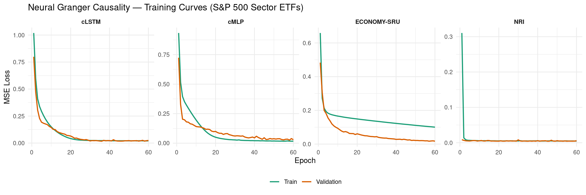
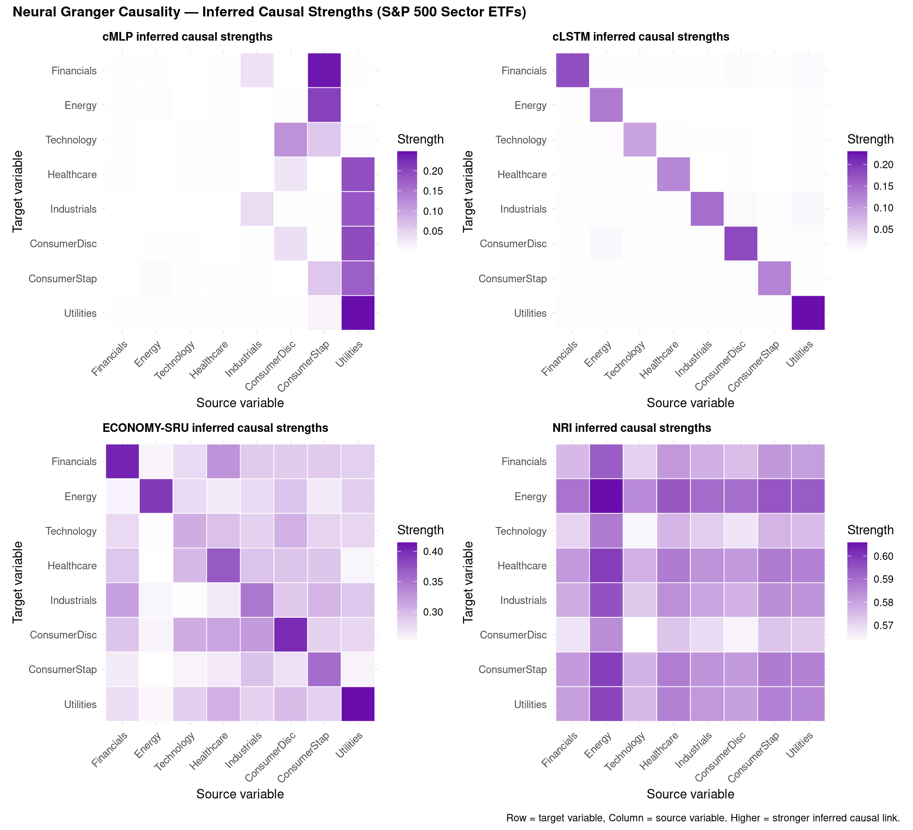
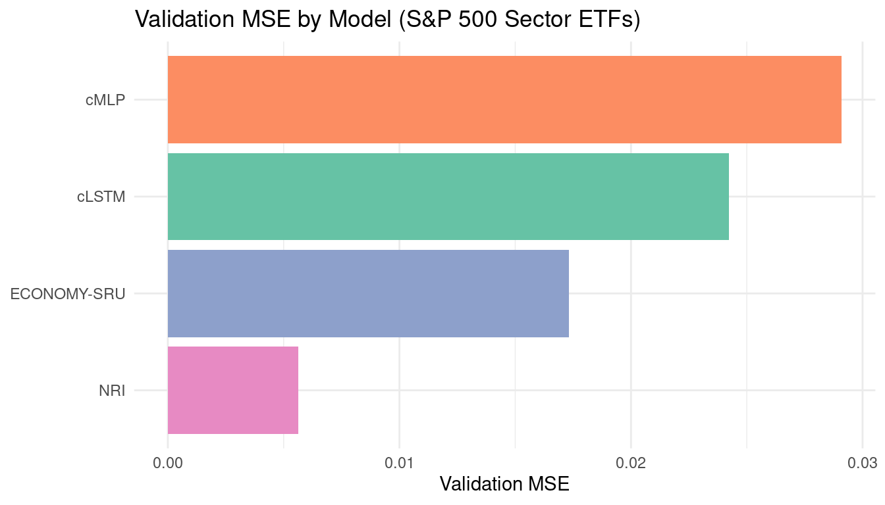
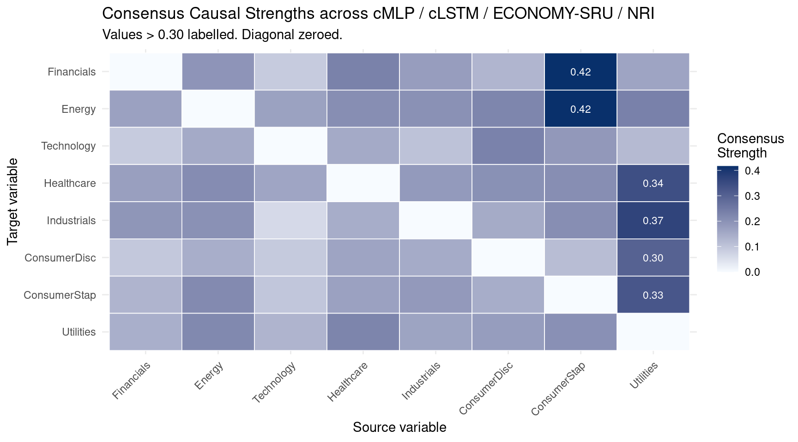

Code
packages <- c(
'tidyverse',
'plyr',
'RCausalML',
'torch',
'tidyquant',
'reshape2',
'scales'
)
Neural Granger Causality extends the classical Granger framework into the nonlinear regime by replacing linear coefficient blocks with neural networks while preserving the sparse input-selection logic of group LASSO. The result is a family of models that discover who causes whom in a multivariate time series without assuming linearity.
If a neural network trained to predict \(Y_t\) assigns zero (or near-zero) weight to all lags of \(X\), then \(X\) does not Granger-cause \(Y\) — regardless of how complex the network is.
Classical Granger causality tests whether past values of \(X\) significantly improve the forecast of \(Y\) beyond what \(Y\)’s own history provides. For lag order \(p\) this is the vector autoregression (VAR):
\[ Y_t = \sum_{k=1}^{p} A_k Y_{t-k} + \epsilon_t \]
If the coefficient block connecting \(X_{t-k} \rightarrow Y_t\) is nonzero, then \(X\) Granger-causes \(Y\). The method is powerful but inherently linear and can miss nonlinear dynamics.
Neural Granger Causality solves this by replacing the fixed coefficient \(A_k\) with a learned nonlinear function, while enforcing structured sparsity — specifically group LASSO — on the input layer weights. A zero group norm for all lags of variable \(X\) means \(X\) is excluded from predicting \(Y\).
A separate MLP is trained for each target variable \(Y_i\):
\[ \hat{Y}_{i,t} = \text{MLP}_i\!\left(Y_{1,t-1:t-p},\ldots,Y_{d,t-1:t-p}\right) \]
Training objective:
\[ \mathcal{L} = \underbrace{\text{MSE}}_{\text{prediction}} + \lambda \underbrace{\sum_j \lVert W_j^{(1)} \rVert_F}_{\text{group LASSO on input weights}} \]
Sparsity on the first-layer weight block \(W_j^{(1)}\) (columns corresponding to all lags of variable \(j\)) causes entire input variables to be selected or zeroed out, making the inferred causal graph readable directly from those norms.
One LSTM per target variable. Better for sequential / long-lag dynamics:
\[ h_t = \text{LSTM}_i(Y_{1:d,\ t-p:t-1}), \qquad \hat{Y}_{i,t} = W_{\text{out}} h_t \]
Group LASSO is applied to the LSTM input-weight matrix \(W_{ih}\), grouping all gates for each source variable \(j\) together.
A simplified GRU with an explicit learnable causal mask:
\[ G \in [0,1]^{d \times d}, \qquad G_{ij} = \sigma(\theta_{ij}) \]
The mask gates each variable’s contribution to every other variable’s GRU update. Sparsity is induced by an \(\ell_1\) penalty \(\lambda \sum_{ij} G_{ij}\) on the mask, driving weak links to zero.
NRI (Kipf et al., 2018) is a graph-VAE approach that simultaneously learns edge types and dynamics:
\[ \mathcal{L} = \mathbb{E}_{q(z\mid X)}[\log p(X\mid z)] - \mathrm{KL}[q(z\mid X)\|p(z)] \]
The posterior probability of a causal edge between each variable pair forms the inferred adjacency matrix.
We use {RCausalML}’s neural_granger_ml() wrapper — which packages all four models (cMLP, cLSTM, EconomySRU, NRI) — trained on daily log returns of S&P 500 sector ETFs (2018–2023).
packages <- c(
'tidyverse',
'plyr',
'RCausalML',
'torch',
'tidyquant',
'reshape2',
'scales'
)# Install missing packages
#new_packages <- packages[!(packages %in% installed.packages()[,"Package"])]
#if(length(new_packages)) install.packages(new_packages)invisible(lapply(packages, function(pkg) {
suppressPackageStartupMessages(library(pkg, character.only = TRUE))
}))set.seed(42)
if (requireNamespace("torch", quietly = TRUE)) {
torch_manual_seed(42)
device_use <- if (torch::cuda_is_available()) "cuda" else "cpu"
cat(sprintf("Using device: %s\n", device_use))
} else {
device_use <- "cpu"
cat("torch not available; some models will be skipped.\n")
}Using device: cudaWe fetch daily adjusted closing prices for eight major S&P 500 sector ETFs using tidyquant, compute daily log returns, standardise them (zero mean, unit variance), and store them in a matrix data_np with columns named after each sector.
The sector ETFs are:
| Ticker | Sector |
|---|---|
| XLF | Financials |
| XLE | Energy |
| XLK | Technology |
| XLV | Healthcare |
| XLI | Industrials |
| XLY | Consumer Discretionary |
| XLP | Consumer Staples |
| XLU | Utilities |
TICKERS <- c(
XLF = "Financials",
XLE = "Energy",
XLK = "Technology",
XLV = "Healthcare",
XLI = "Industrials",
XLY = "ConsumerDisc",
XLP = "ConsumerStap",
XLU = "Utilities"
)
# Download adjusted closing prices via tidyquant
raw_prices <- tq_get(
names(TICKERS),
from = "2018-01-01",
to = "2024-01-01",
get = "stock.prices"
) |>
select(symbol, date, adjusted) |>
pivot_wider(names_from = symbol, values_from = adjusted) |>
arrange(date)
# Daily log returns; drop the first row (NA from lag)
returns_mat <- raw_prices |>
select(-date) |>
mutate(across(everything(), ~ log(. / lag(.)))) |>
slice(-1)
# Rename columns to sector names (match TICKERS order)
colnames(returns_mat) <- TICKERS[colnames(returns_mat)]
cat(sprintf("Shape: %d rows x %d columns\n", nrow(returns_mat), ncol(returns_mat)))Shape: 1508 rows x 8 columns Financials Energy Technology Healthcare Industrials ConsumerDisc
mean 28.2595 26.2700 56.2044 102.7222 80.7197 68.2038
sd 5.2023 8.3063 18.7677 20.3666 14.7193 14.6545
min 15.8402 9.2453 26.9725 67.7696 44.4952 41.4512
max 38.4625 42.7090 95.1656 133.6866 110.6208 101.7998
ConsumerStap Utilities
mean 56.8020 26.6167
sd 9.5064 4.0038
min 39.4760 18.3465
max 72.3537 34.8483
Variables (8): Financials, Energy, Technology, Healthcare, Industrials, ConsumerDisc, ConsumerStap, UtilitiesTime steps: 1508# Standardise to zero mean / unit variance (as float32 equivalent in R)
col_means <- colMeans(returns_mat, na.rm = TRUE)
col_sds <- apply(returns_mat, 2, sd, na.rm = TRUE)
col_sds[col_sds == 0] <- 1
data_np <- scale(as.matrix(returns_mat), center = col_means, scale = col_sds)
storage.mode(data_np) <- "double"
cat("Standardised data: first 5 rows\n")Standardised data: first 5 rows Financials Energy Technology Healthcare Industrials ConsumerDisc
[1,] -0.8164 -0.0165 -1.3897 -1.4388 -0.9585 -1.4819
[2,] -0.7736 0.0025 -1.3816 -1.4337 -0.9254 -1.4715
[3,] -0.7605 0.0012 -1.3647 -1.4029 -0.8940 -1.4463
[4,] -0.7670 0.0202 -1.3585 -1.4161 -0.8751 -1.4425
[5,] -0.7309 0.0122 -1.3627 -1.3734 -0.8455 -1.4362
ConsumerStap Utilities
[1,] -1.2101 -1.6590
[2,] -1.1966 -1.7004
[3,] -1.1755 -1.7024
[4,] -1.1637 -1.6561
[5,] -1.1704 -1.7053For neural Granger causality we frame the multivariate time series as a supervised regression problem: given all variables over a lag window of \(p\) steps, predict the next values. Sparsity in the first-layer weights then reveals the causal structure.
LAG <- 5L # Trading week
build_lag_dataset <- function(data, lag) {
n <- nrow(data) - lag
d <- ncol(data)
x_flat <- matrix(0, nrow = n, ncol = d * lag)
x_seq <- array(0, dim = c(n, lag, d))
y <- matrix(0, nrow = n, ncol = d)
for (t in seq_len(n)) {
window <- data[t:(t + lag - 1), , drop = FALSE] # (lag, d)
x_flat[t, ] <- as.vector(t(window)) # row-major flatten: (d*lag,)
x_seq[t, , ] <- window
y[t, ] <- data[t + lag, ]
}
colnames(y) <- colnames(data)
list(x_flat = x_flat, x_seq = x_seq, y = y)
}
prep <- build_lag_dataset(data_np, LAG)
n_total <- nrow(prep$y)
split_idx <- floor(0.8 * n_total)
x_flat_tr <- prep$x_flat[seq_len(split_idx), , drop = FALSE]
x_flat_val <- prep$x_flat[(split_idx + 1L):n_total, , drop = FALSE]
x_seq_tr <- prep$x_seq[seq_len(split_idx), , , drop = FALSE]
x_seq_val <- prep$x_seq[(split_idx + 1L):n_total, , , drop = FALSE]
y_tr <- prep$y[seq_len(split_idx), , drop = FALSE]
y_val <- prep$y[(split_idx + 1L):n_total, , drop = FALSE]
cat(sprintf(
"Train: x_flat %s | Val: x_flat %s\n",
paste(dim(x_flat_tr), collapse = " x "),
paste(dim(x_flat_val), collapse = " x ")
))Train: x_flat 1202 x 40 | Val: x_flat 301 x 40{RCausalML}’s neural_granger_ml() trains cMLP, cLSTM, EconomySRU, and NRI in a single call. Under the hood each model is a torch nn_module; training uses Adam with gradient clipping and group-LASSO / sparsity regularisation.
EPOCHS <- 60L
LAM <- 0.005
HIDDEN <- 32L
LR <- 5e-4
BATCH_SIZE <- 32L
cat("Fitting Neural Granger Causality models via RCausalML::neural_granger_ml() ...\n")Fitting Neural Granger Causality models via RCausalML::neural_granger_ml() ...ngc_fit <- neural_granger_ml(
data = data_np,
lag = LAG,
models = c("cmlp", "clstm", "economysru", "nri"),
hidden = HIDDEN,
lam = LAM,
epochs = EPOCHS,
batch_size = BATCH_SIZE,
lr = LR,
val_split = 0.2,
n_edge_types = 2L,
temp = 0.5,
device = device_use,
verbose = TRUE
)
cat("\nTraining complete. Validation MSE per model:\n")
Training complete. Validation MSE per model:val_mse_df <- data.frame(
Model = names(ngc_fit$val_mse),
Val_MSE = unlist(ngc_fit$val_mse),
Val_RMSE = sqrt(unlist(ngc_fit$val_mse)),
row.names = NULL
)
val_mse_df <- val_mse_df[order(val_mse_df$Val_MSE), ]
val_mse_df[, sapply(val_mse_df, is.numeric)] <- round(
val_mse_df[, sapply(val_mse_df, is.numeric)], 6)
print(val_mse_df) Model Val_MSE Val_RMSE
4 nri 0.005635 0.075069
3 economysru 0.017325 0.131625
2 clstm 0.024223 0.155637
1 cmlp 0.029098 0.170581model_labels <- c(cmlp = "cMLP", clstm = "cLSTM", economysru = "ECONOMY-SRU", nri = "NRI")
loss_list <- lapply(names(ngc_fit$histories), function(m) {
h <- ngc_fit$histories[[m]]
data.frame(
model = model_labels[m],
epoch = seq_along(h$train_loss),
train = h$train_loss,
val = h$val_loss
)
})
loss_df <- bind_rows(loss_list)
loss_long <- loss_df |>
pivot_longer(cols = c(train, val), names_to = "split", values_to = "loss") |>
mutate(split = factor(split, levels = c("train", "val"), labels = c("Train", "Validation")))
ggplot(loss_long, aes(x = epoch, y = loss, color = split)) +
geom_line(linewidth = 0.8) +
facet_wrap(~ model, nrow = 1, scales = "free_y") +
scale_color_manual(values = c(Train = "#1b9e77", Validation = "#d95f02")) +
labs(
title = "Neural Granger Causality — Training Curves (S&P 500 Sector ETFs)",
x = "Epoch",
y = "MSE Loss",
color = NULL
) +
theme_minimal() +
theme(legend.position = "bottom", strip.text = element_text(face = "bold"))
Each model produces a \(d \times d\) matrix where entry \((i, j)\) encodes the strength of influence from source variable \(j\) to target variable \(i\):
plot_causal_heatmap <- function(mat, title, var_names) {
mat_df <- as.data.frame(mat)
colnames(mat_df) <- var_names
rownames(mat_df) <- var_names
mat_long <- mat_df |>
rownames_to_column("Target") |>
pivot_longer(-Target, names_to = "Source", values_to = "Strength") |>
mutate(
Target = factor(Target, levels = rev(var_names)),
Source = factor(Source, levels = var_names)
)
ggplot(mat_long, aes(x = Source, y = Target, fill = Strength)) +
geom_tile(color = "white", linewidth = 0.3) +
scale_fill_gradient(low = "white", high = "#6a0dad", name = "Strength") +
labs(title = title, x = "Source variable", y = "Target variable") +
theme_minimal() +
theme(
axis.text.x = element_text(angle = 45, hjust = 1, size = 9),
axis.text.y = element_text(size = 9),
plot.title = element_text(face = "bold", size = 10)
)
}
p_cmlp <- plot_causal_heatmap(
ngc_fit$causal_matrices$cmlp, "cMLP inferred causal strengths", VAR_NAMES)
p_clstm <- plot_causal_heatmap(
ngc_fit$causal_matrices$clstm, "cLSTM inferred causal strengths", VAR_NAMES)
p_sru <- plot_causal_heatmap(
ngc_fit$causal_matrices$economysru, "ECONOMY-SRU inferred causal strengths", VAR_NAMES)
p_nri <- plot_causal_heatmap(
ngc_fit$causal_matrices$nri, "NRI inferred causal strengths", VAR_NAMES)
library(patchwork)
(p_cmlp | p_clstm) / (p_sru | p_nri) +
plot_annotation(
title = "Neural Granger Causality — Inferred Causal Strengths (S&P 500 Sector ETFs)",
caption = "Row = target variable, Column = source variable. Higher = stronger inferred causal link.",
theme = theme(plot.title = element_text(face = "bold", size = 12))
)
val_mse_plot <- data.frame(
Model = model_labels[names(ngc_fit$val_mse)],
Val_MSE = unlist(ngc_fit$val_mse)
)
ggplot(val_mse_plot, aes(x = reorder(Model, Val_MSE), y = Val_MSE, fill = Model)) +
geom_col(show.legend = FALSE) +
scale_fill_brewer(palette = "Set2") +
labs(
title = "Validation MSE by Model (S&P 500 Sector ETFs)",
x = NULL,
y = "Validation MSE"
) +
coord_flip() +
theme_minimal()
Average the causal matrices across all four models (after min-max normalisation) to derive a consensus strength for each directed variable pair.
minmax <- function(m) {
rng <- range(m)
if (diff(rng) < 1e-10) return(matrix(0, nrow(m), ncol(m)))
(m - rng[1]) / diff(rng)
}
mats_norm <- lapply(ngc_fit$causal_matrices, minmax)
consensus <- Reduce("+", mats_norm) / length(mats_norm)
rownames(consensus) <- VAR_NAMES
colnames(consensus) <- VAR_NAMES
diag(consensus) <- 0
cat("Consensus causal matrix (min-max normalised, diagonal zeroed):\n")Consensus causal matrix (min-max normalised, diagonal zeroed): Financials Energy Technology Healthcare Industrials ConsumerDisc
Financials 0.000 0.195 0.090 0.233 0.178 0.131
Energy 0.170 0.000 0.169 0.209 0.202 0.225
Technology 0.089 0.152 0.000 0.152 0.105 0.232
Healthcare 0.174 0.212 0.162 0.000 0.184 0.203
Industrials 0.193 0.202 0.063 0.147 0.000 0.152
ConsumerDisc 0.094 0.146 0.091 0.164 0.151 0.000
ConsumerStap 0.133 0.216 0.098 0.170 0.186 0.147
Utilities 0.143 0.219 0.133 0.228 0.165 0.179
ConsumerStap Utilities
Financials 0.417 0.165
Energy 0.416 0.235
Technology 0.188 0.122
Healthcare 0.208 0.344
Industrials 0.208 0.369
ConsumerDisc 0.116 0.301
ConsumerStap 0.000 0.326
Utilities 0.204 0.000# Visualise as a heatmap
consensus_long <- as.data.frame(consensus) |>
rownames_to_column("Target") |>
pivot_longer(-Target, names_to = "Source", values_to = "Strength") |>
mutate(
Target = factor(Target, levels = rev(VAR_NAMES)),
Source = factor(Source, levels = VAR_NAMES)
)
ggplot(consensus_long, aes(x = Source, y = Target, fill = Strength)) +
geom_tile(color = "white", linewidth = 0.3) +
geom_text(aes(label = ifelse(Strength > 0.3, sprintf("%.2f", Strength), "")),
size = 3, color = "white") +
scale_fill_gradient(low = "#f7fbff", high = "#08306b", name = "Consensus\nStrength") +
labs(
title = "Consensus Causal Strengths across cMLP / cLSTM / ECONOMY-SRU / NRI",
subtitle = "Values > 0.30 labelled. Diagonal zeroed.",
x = "Source variable",
y = "Target variable"
) +
theme_minimal() +
theme(axis.text.x = element_text(angle = 45, hjust = 1))
LAG, LAM, HIDDEN, and EPOCHS to trade off fit vs. sparsity. Increasing LAM produces sparser, more interpretable graphs; decreasing it may reveal weaker relationships.neural_granger_ml() call; the returned object contains trained models, per-epoch histories, validation MSEs, and \(d \times d\) causal matrices ready for downstream analysis.neural_granger_ml() in R/causalDeepNet.R
05-03-05-DeepCausalML-causal-structural-learning-regularization-CASTLE-r.qmd — CASTLE uses a similar group-sparsity idea for structure learning in a supervised setting; compare the two approaches.05-04-00-DeepCuasalML-timesseries-introduction-r.qmd — overview of all deep causal time series methods in this series.